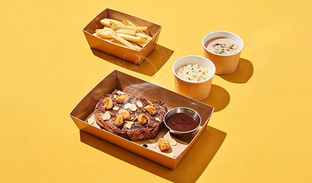

arrow_back_ios
갈릭 립아이

갈릭 립아이
구운 마늘과 마늘칩이 어우러진 꽃등심 스테이크(수프, 사이드 2종 제공)
46,900원
원산지 표시
arrow_back_ios
쇠고기: 미국산
돼지고기(돼지갈비): 스페인산
돼지고기(베이컨): 외국산
닭고기: 국내산
오징어: 칠레산
쌀: 국내산
배추: 국내산
고춧가루: 국내산
알레르기 성분 표시
arrow_back_ios
갈릭 립아이 스테이크 : 우유, 대두, 밀, 토마토, 닭고기, 쇠고기, 조개류, 아황산류
투움바 파스타 : 우유, 대두, 밀, 새우, 토마토
오지치즈후라이 : 달걀, 우유, 대두, 돼지고기, 쇠고기
오지후라이(사이드) : 대두
양송이스프 : 달걀, 우유, 대두, 밀, 닭고기
옵션선택